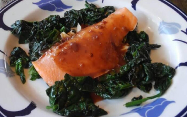
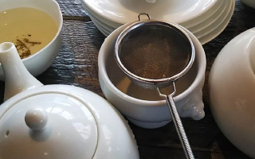
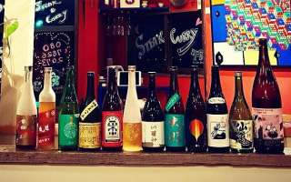

Concept
コンセプト
アルチザンマコトは
肉料理が好きな方も、野菜料理が好きな方(Vegan)も、
一緒にお食事を楽しめるフレンチレストランです。
News&Event
お知らせ・イベント
- 
2020/03/20 サーモン入荷しました!!
サーモンブールルージュを作りました。家族や女子会、皆さまお気軽にお越しください。
- 
2020/02/01 稀少品の冬摘みのシルバーティップス入荷しました!!
なんと稀少品の冬摘みのシルバーティップスを入荷。紅茶の好きな方にご馳走しちゃいました。水の色と香りが凄い。なんだか最近コーヒーを飲まないお客様が多いような気がするのは私の気のせいなのか。 家族や女子会、皆さまお気軽にお越しください。
- 
2020/01/20 純米酒＆オーガニックチャイを楽しむパーティーのお知らせ
ビーガン・トリュフ・カリーとおつまみ、純米酒&オーガニックチャイをたっぷり楽しむ冬の宵を企画中。1月20日19時スタートを予定しています。ピンと来た方、あけとてくださいね。
2019/12/01 イチゴが入荷しました!!
イチゴ!そんなことわざわざ書かなくても皆さんご存知香川のお土産で貰っちゃいました。既に摘まんでますが凄い香り&甘さ。家族や女子会、皆さまお気軽にお越しください。。